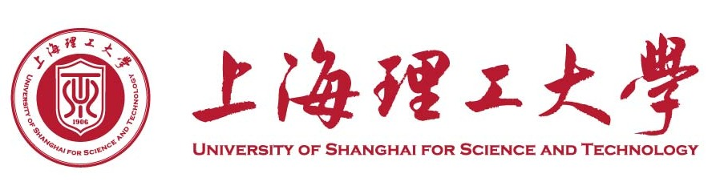
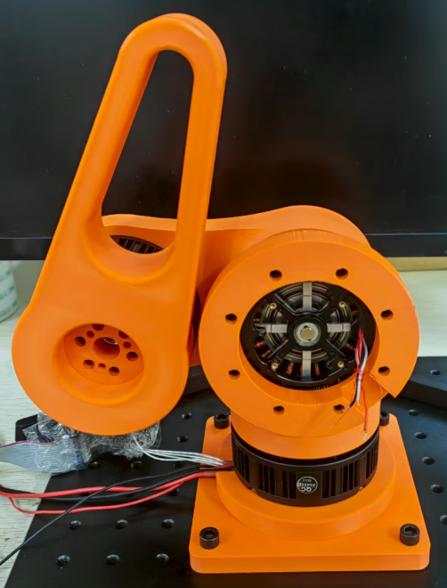
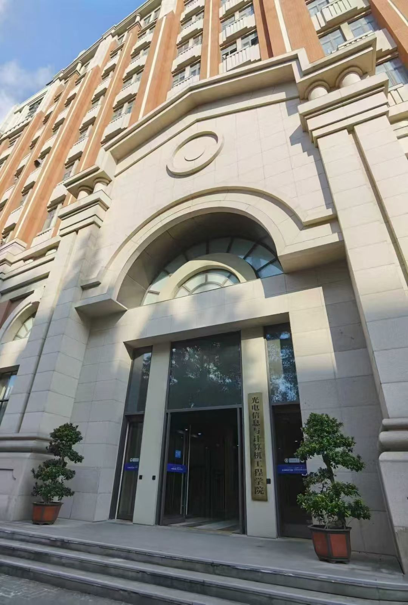
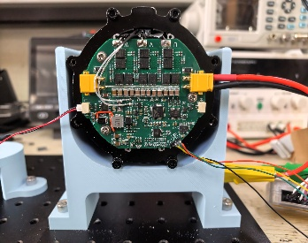
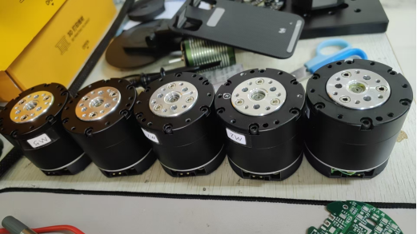
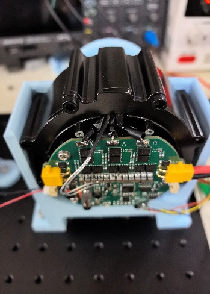
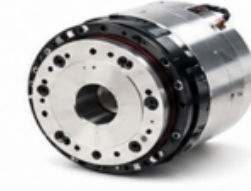
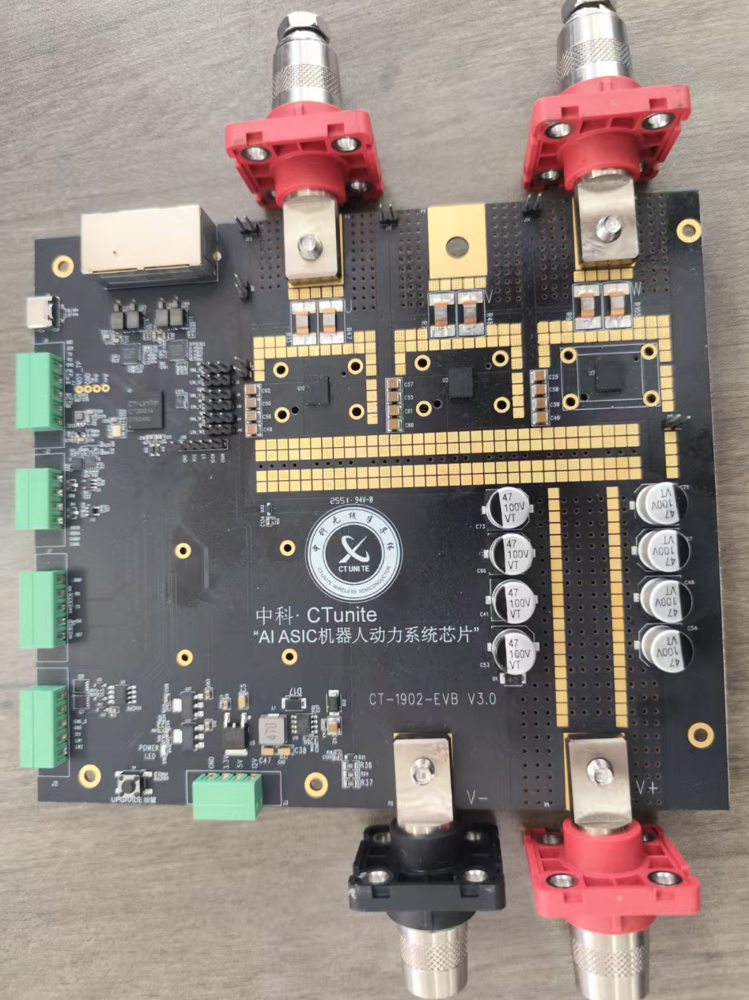

Team Lead
丁学明
上海理工大学控制科学与工程系，带领团队推进电机底层驱动、伺服控制算法与机器人关节驱动器产品落地。

丁学明
Team Lead
上海理工大学控制科学与工程系，带领团队推进电机底层驱动、伺服控制算法与机器人关节驱动器产品落地。

USST OECE
依托高校科研与企业项目经验，面向机器人关节、工业伺服、步进伺服、无感等驱动器开展技术交流与合作。
Engineering Focus
能力重点覆盖永磁同步电机、步进伺服、无位置传感器FOC、机器人关节驱动器与气动比例阀/定位器控制器等方向。
熟悉编码器读取、电流采样、Clarke/Park变换、逆Park变换、SVPWM、死区补偿与交叉解耦等电机控制基础链路。
形成成熟的前馈PID设计与整定方法，ADRC已应用于伺服驱动器，通过ESO扰动估计与补偿提升抗扰性能。
覆盖滑模观测器、Luenberger观测器、磁链观测器与高频注入等角度估计方法，支持编码器与无位置传感器方案。
使用Ozone实时绘制曲线、导出数据并结合Matlab分析，支持带宽、动态响应、静态刚度、效率与稳定性测试。
Servo Solutions
通过电机辨识模态产生数据，识别电阻、电感、磁链、转动惯量与摩擦系数，再基于带宽法完成电流环、速度环和前馈参数整定。

Joint Drive Platforms


三环控制策略，双编码器，高精度电流采样；电流环PI自动整定，速度环ADRC或PI加前馈，位置环P加前馈，支持CANopen、CAN、485总线。


面向高带宽、高精度、高可靠性：480MHz RISC-V内核，HCL硬件电流环，支持FOC全流程硬件加速；电机端编码器、BiSS离轴绝对值编码器、SDFM高精度电流采样，并可扩展EtherCAT多轴实时控制。
Project Experience
Control Architecture
识别电学参数与动力学参数，建立可用于整定和前馈设计的电机模型。
完成电流环、速度环、位置环控制策略，并针对扰动、超调和响应速度优化。
落地到底层驱动、FOC流程、采样与编码器反馈，适配目标控制平台。
通过带宽、阶跃响应、稳定性、效率和现场数据分析完成系统优化。
Service & Cooperation
已服务上海、深圳、杭州、苏州、合肥、成都、珠海、厦门等地科技型公司，其中包含上市公司、中型公司与长期合作伙伴。
Related Links
Contact
适合电机控制算法开发、机器人关节驱动器方案、伺服系统调试、无感FOC控制、工程师培训与校企合作咨询。